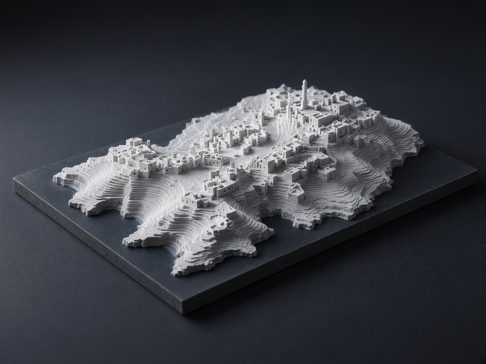
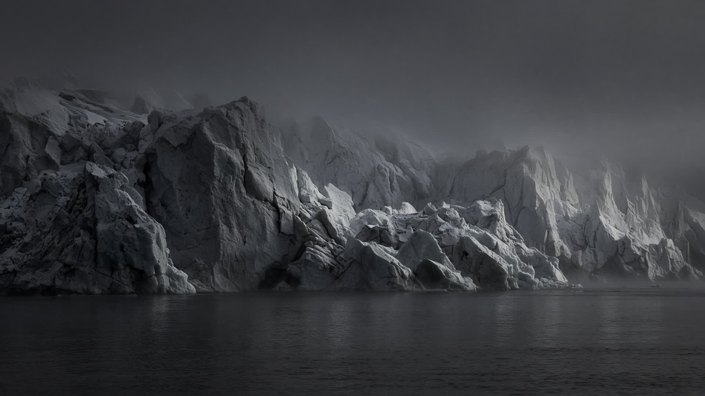
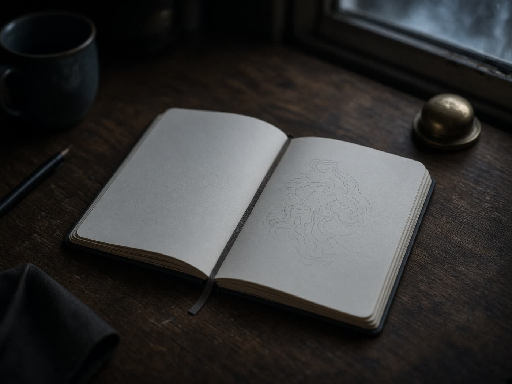
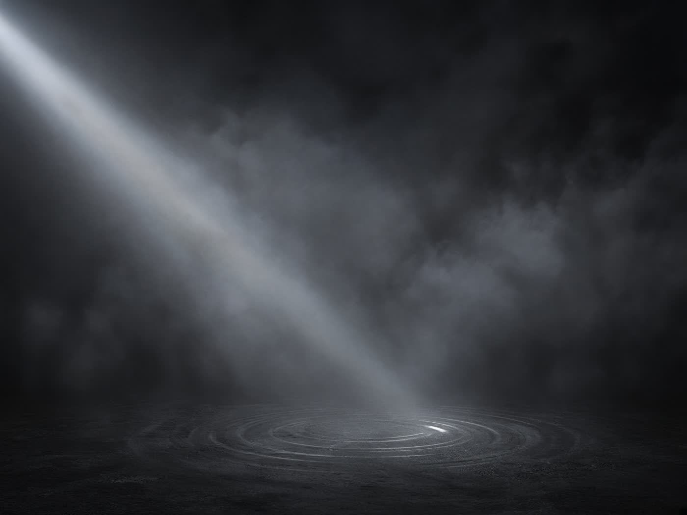
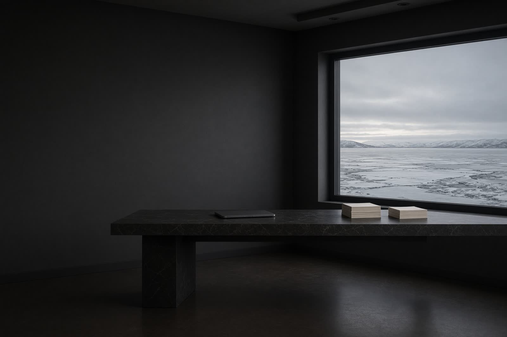

Atlas
界面研究
占位项目。之后换成你真正做过的东西。

01 — 开场
02 — 此刻
03 — 作品
先用三张卡片把节奏立住。标题、年份、说明之后都可以换。

界面研究
占位项目。之后换成你真正做过的东西。

随记
占位项目。一篇还没写完的笔记。

实验
占位项目。一段还在生长的想法。
04 — 关于

这里是个人主页的占位文案。之后可以换成你的经历、正在做的事，以及你关心的问题。
This page is a scaffold. Swap the copy, plug in real work, keep the motion.
05 — 联系
邮箱与社交链接也先占位。GitHub 已经接上。
hello@example.com github.com/ice-creator-new